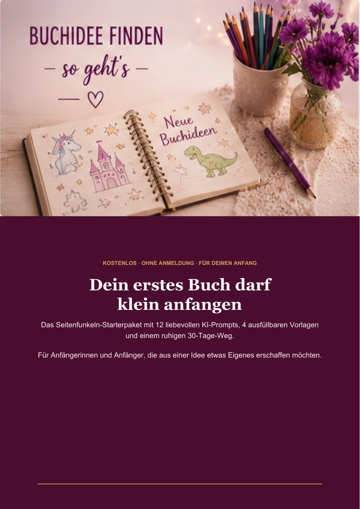
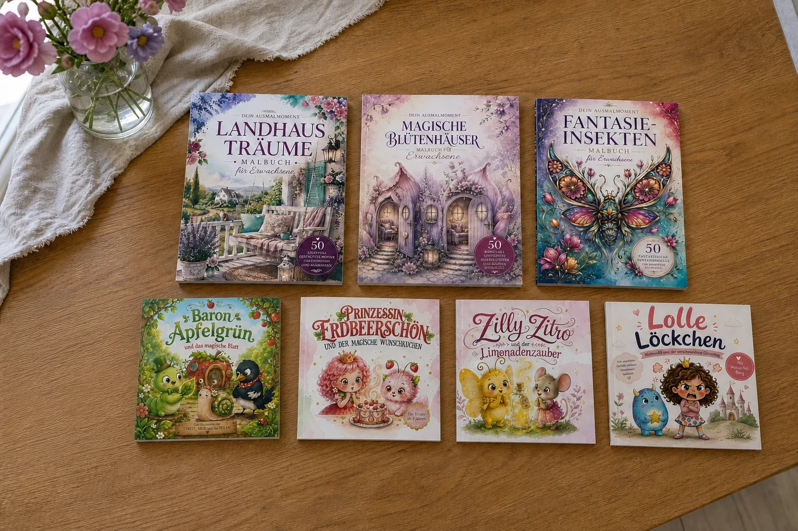

Dein einfacher Start mit KDP und KI
Was Amazon KDP ist, wo KI wirklich hilft und welche ersten Schritte dich vor unnötigem Chaos bewahren.
WeiterlesenFür Anfängerinnen und Anfänger mit einem Traum und ganz vielen Ideen
Vielleicht trägst du schon länger eine Buchidee im Herzen. Hier teile ich mit dir, was mir beim Verstehen, Planen und Losgehen geholfen hat – liebevoll, verständlich und ohne Fachchinesisch.
Ich möchte dir Wissen so weitergeben, wie ich es selbst gern bekommen hätte: verständlich, ermutigend und in kleinen Schritten, die sich wirklich machbar anfühlen.
Aus einem Gedanken wird eine Buchidee, die zu dir und den Menschen passt, die du erreichen möchtest.
Du lernst KDP und KI in einfachen Worten kennen und verstehst, was deine nächsten Schritte sind.
Du setzt in deinem Tempo um – getragen von Wissen, Motivation und ganz viel Herz.
Was Amazon KDP ist, wo KI wirklich hilft und welche ersten Schritte dich vor unnötigem Chaos bewahren.
WeiterlesenVon der zu breiten Idee bis zur blinden KI-Nutzung: Diese Stolperfallen kannst du von Anfang an umgehen.
WeiterlesenEine ehrliche Einschätzung zu Chancen, Geduld und den Faktoren, die Verkäufe tatsächlich beeinflussen.
WeiterlesenEine kleine Übung, mit der du aus Interessen und Zielgruppen drei prüfbare Buchideen entwickelst.
WeiterlesenSo beurteilst du Zielgruppe, Suchergebnisse, Konkurrenz und Preisumfeld ohne komplizierte Marktanalyse.
WeiterlesenEin realistischer Monatsplan von der Orientierung bis zum geprüften Buchkonzept, ohne hektisches Veröffentlichen.
WeiterlesenDas kostenlose Seitenfunkeln-Starterpaket hilft dir, deine Gedanken zu sortieren, eine Idee zu prüfen und einen kleinen 30-Tage-Weg zu beginnen.
Starterpaket entdecken 16 Seiten · PDF · kein Newsletter

Was du hier siehst, habe ich selbst erschaffen und umgesetzt. Am Anfang standen viele Gedanken, Bilder und der Wunsch, daraus etwas Eigenes entstehen zu lassen.
Kapitel 2 hat mir dabei geholfen, Zusammenhänge besser zu verstehen, meinen Weg klarer zu sehen und aus Ideen wirkliche Buchprojekte zu machen. Genau deshalb teile ich meine Erfahrung heute mit dir.
Wie Kapitel 2 mir geholfen hatMit Kapitel 2 habe ich selbst eigene Ideen umgesetzt und Dinge erschaffen. Der Kurs hat mir dabei vieles verständlich gemacht und mich wirklich weitergebracht. Deshalb lege ich ihn allen ans Herz, die ebenfalls von einem eigenen Buch träumen und sich liebevolle Begleitung für ihren Anfang wünschen.
Du brauchst keine perfekte erste Idee. Du brauchst eine Idee, die du verstehen, prüfen und Schritt für Schritt verbessern kannst.Meine erste Idee finden